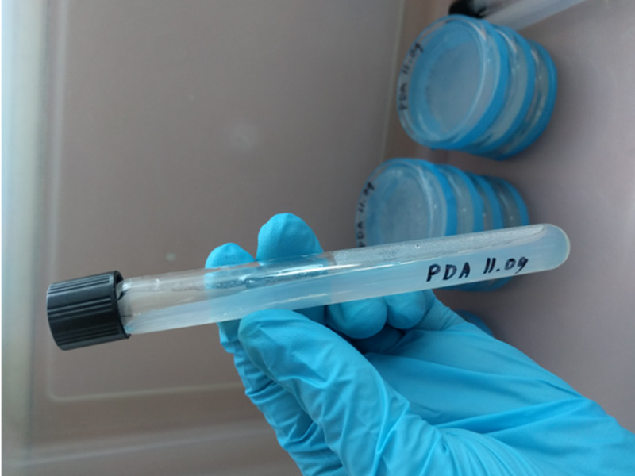
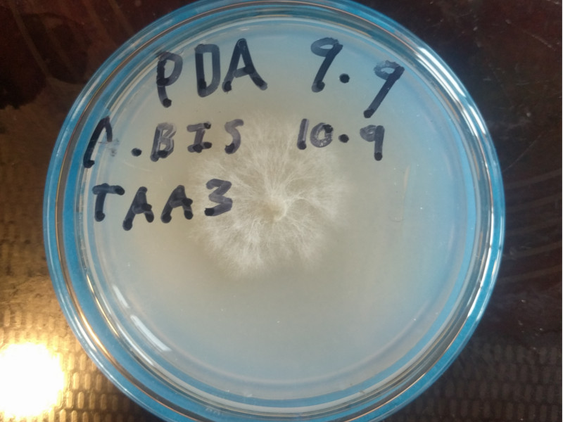
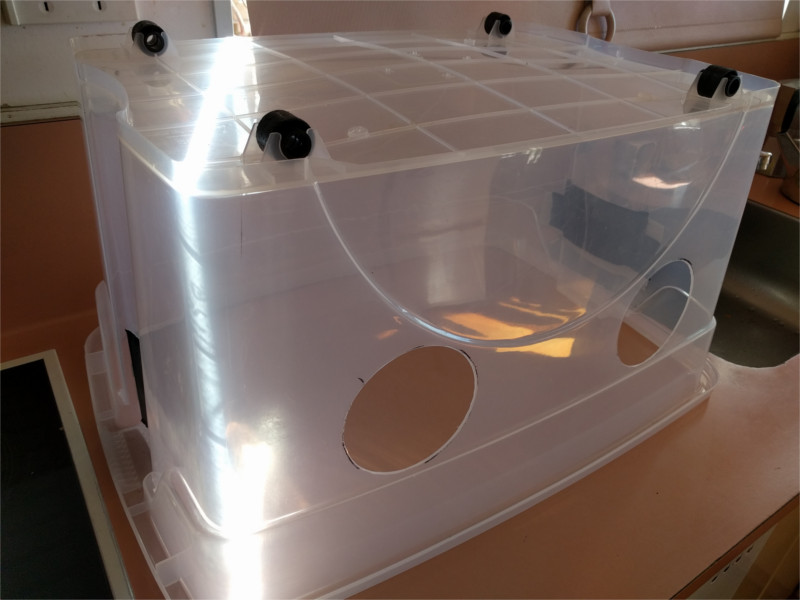

September 2021
Thu, Sep 9
New PDA mix with Alt recipe 2
Discarded 3/4 TAA2
Discarded 1/2 TDA2
Premixed and autoclaved mixture with empty dishes.
Sterilised for 20min on low setting with 1L of water.
Stirred then poured at 50c.
Note: –
Discarded: TAA2 x3, TAD2 x1
Currently Live: TAD1, TAD2, TAA2
Fri, Sep 10
Transferred out A.Bis:
TDA1 03.08 -> TDA2 10.09 x3
TAA2 14.08 -> TAA3 10.09 x2
TDA2 14.08 -> TDA3 10.09 x2
Sat, Sep 11
Made up slants for the first time. Also new PDA plates.
More petri dishs and test tubes arrived this weekend. I’m hopeful that we might get a clean plate out of yesterdays lot of transfers, and can make up some slants as a backup before moving onto making grain spawn or liquid media.
Today’s goal is to clean and prep the new glassware and document some of the protocols for the lab notebook.

15mm Ø x 100mm slants with 7ml of PDA media
This was my first go at making up slants. I made them up after pouring all the agar plates first, so the PDA mix had stated to cool a bit. The last few didn’t slant very nicely.
In addition I’m a bit concerned that the small size of the test tube will make them challenging to work with during later processes.
Mon, Sep 13
Remade all of the previous plates and slants from 11/09, this time with the correct recipe. ㅇㅅㅇ)
Note: –
Discarded: TDA2 14.08 & TDA3 10.09 x2
Currently Live: TDA1 03.08, TDA2 10.09 x3, TAA2 14.08, TAA3 10.09 x2
Fri, Sep 17
Discarded TDA3 10.09 x2,TAD2 14.08
Update from 13/09: 3 of 11 new clean plates contaminated
Sun, Sep 19
Transferred out A.Bis:
TDA2 10.09 -> TDA3 19.09
TDA2 10.09 -> TDA3 19.09
Update from 13/09: 9 of 11 clean plates & 1 of 5 slants contaminated, discarded.
 Our first clean mono culture (I think)
Note: –
Discarded: TDA1 03.08, TAA2 14.08, TDA2 10.09 x2
Currently Live: TAA3 10.09 x2, TDA3 19.09 x2
So a couple of changes this cycle. We’re now storing the petri dishes upside down in the incubator to try and reduce the condensation on the lid. You can see the change in growth pattern on TAA3 from when it was flipped.
We also incubated all the new clean plates from 13/09. About two thirds were contaminated. So glad to find that before making transfers into them.
Mon, Sep 20
Today we built a larger Still air box to try and make workflows a bit easier and reduce contamination.
Made up 300ml of PDA using the PDA #2 recipe to fill 17 plates & 1 slant, probably only needed 250ml.

New still air box
Fri, Sep 24
Transferred out A.Bis:
TDA3 -> TDA4 24.09
TDA3 -> TDA4 24.09
TAA3 -> TAA4 24.09 x4
Update from 20/09: 11 of 17 plates contaminated, discarded.
Note: –
Discarded: TDA3 19.09
Currently Live: TAA3 10.09 x2, TDA3 19.09, TAA4 24.09 x4, TDA4 24.09 x2